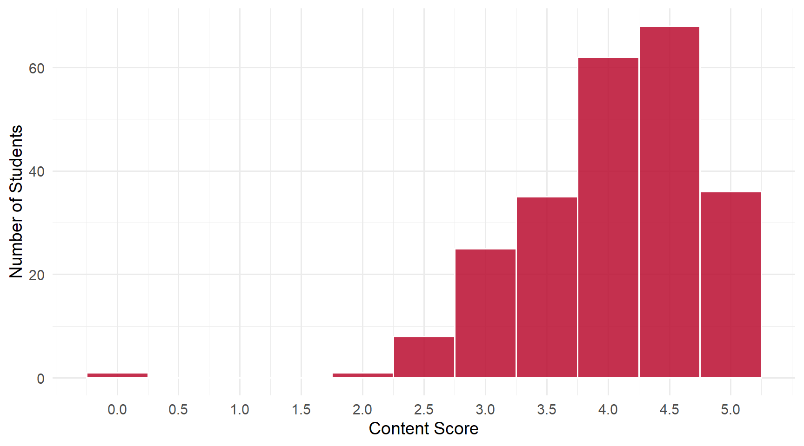
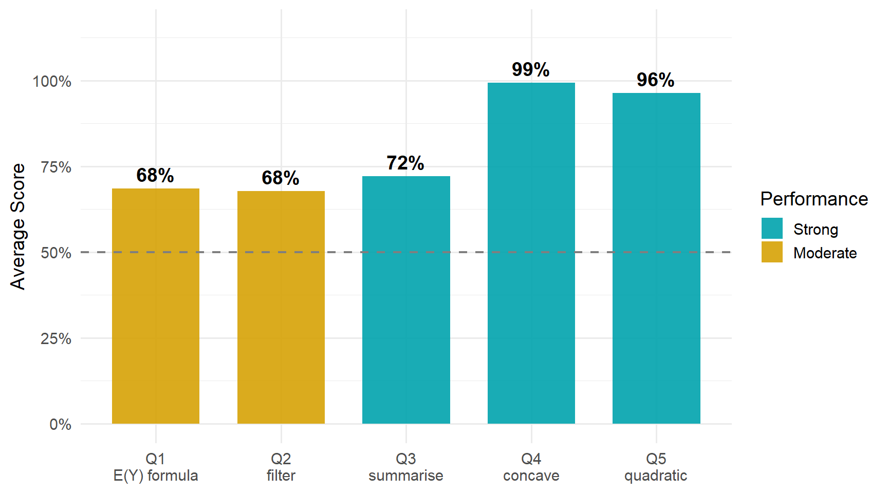

4 Daily 05 — Sep 3
4.1 Class Performance
Students: 236 | Content mean: 4.04 / 5 | Median: 4 | SD: 0.73 | Mean daily score: 9.62 / 10
Content scores ranged from 0 to 5 out of 5. (Your daily score adds the 8-point attendance credit for submitting; each question is worth 0.4 of the remaining 2 points.)
This daily splits into two clean halves, and the split is the most useful thing on the page. The two questions that asked you to name something — Q4 and Q5 — were answered almost perfectly. The three that asked you to state a definition or explain a computation in your own words all landed around 70%.
That gap is not about difficulty. Read on for what actually cost the points.
4.2 Score Distribution
4.3 Performance by Question

ImportantThe pattern worth taking from this daily
Across Q1, Q2 and Q3, the dominant error was not being wrong. It was being half right and stopping.
- Q1 wanted a definition; a quarter of the class wrote the estimator.
- Q2 wanted the operation and the age condition; the most common answer gave the operation alone.
- Q3 wanted the statistic and the grouping; the most common answers gave one or the other.
Each of these questions has two required elements, and in each case the modal answer supplied one of them. When a question asks you to explain what something is or what a line of code does, check your sentence for both halves before you move on.
4.4 Questions
4.4.1 Q1: Write down a formal definition of expected value.
TipCorrect Answer
\[E(Y) \;=\; \sum_{j=1}^{J} p_j \, y_j\]
Each possible value \(y_j\), multiplied by the probability \(p_j\) that \(Y\) takes it, summed over all \(J\) values. Writing the factors in the other order, leaving the index limits off, or using \(f(y_j)\) for \(p_j\) are all fine — the sum and the probability weights are what matter.
WarningCommon Errors
- Writing the estimator instead of the definition — \(\frac{1}{N}\sum_i Y_i\), or simply \(\bar{Y}\). About a quarter of the class, and the single largest error on the daily. See below.
- Entering the chain in the middle — \(\frac{1}{N}\sum_j N_j y_j\), or \(\sum_j N_j y_j\) with the \(1/N\) dropped. The weights are present, but they are counts rather than probabilities, and the expression is still an estimator.
- Words instead of notation. “The probability-weighted average of all its possible outcomes” is a correct sentence and earned half credit — the question asked for the formal definition, which means the formula.
- “The most likely value” — or “the value you’d expect”, “the predicted outcome”. This is the mode, or a vague notion of prediction. No averaging and no probability weighting appear anywhere in it.
- The conditional expectation substituted — \(E(Y \mid \text{age})\), or a list \(\bar{y}_{23}, \bar{y}_{24}, \ldots\). That is the object from the CEF part of the lecture, not the definition asked for.
- Summing the wrong thing — \(\sum_j p_j\) (the probabilities alone, which sum to 1) or \(\sum_j y_j\) (the values with no weights).
- The product with no sum — \(p_j y_j\) written on its own.
- Index drift — \(\sum_{j=1}^{J} p_j y_i\), mixing the population index \(j\) with the observation index \(i\) in one expression. Not penalised, but worth noticing: those two indices point at different things.
ImportantWorth Your Attention
The lecture built a chain: \[\hat{E}(Y) \;=\; \sum \hat{p}_j y_j \;=\; \sum \tfrac{N_j}{N} y_j \;=\; \tfrac{1}{N}\sum_j N_j y_j \;=\; \tfrac{1}{N}\sum_i Y_i \;=\; \bar{Y}\]
Students who wrote the whole chain almost always started correctly. Students who wrote one line of it disproportionately picked the last one — and the last line is the sample average, which is not what \(E(Y)\) is. It is how we estimate it.
If that sounds familiar, it should: this is the estimand/estimator distinction from Daily 04, wearing a formula instead of a vocabulary word. There it was answering “what do we estimate the expected value with?” by naming the expected value. Here it is answering “what is the expected value?” by naming the estimator. Same collapse, opposite direction.
\(E(Y)\) is a property of the distribution — it exists whether or not you ever collect data. \(\bar{Y}\) is a number you compute from a sample. Keep them apart.
4.4.2 Q2: What is filter doing in the “defining a career” chunk?
TipCorrect Answer
It keeps the rows (individuals) whose age is between 23 and 62 — restricting the sample to people in a roughly 40-year working career, and dropping everyone outside that window.
WarningCommon Errors
- The operation with no age condition. The single most common answer: “narrows the data down,” “keeps rows that meet a condition,” “selects data matching certain criteria.” The mechanism is right and the actual restriction — ages 23 to 62 — is never stated. The question asked what this code is doing, and the ages are what it is doing.
- The age range with no keep-or-drop sense — “it’s about ages 23 through 62,” “setting age with constraints of \(23 < x < 62\).” The mirror image of the error above: the condition is stated, but not that some observations survive and others don’t.
- Using the banned word anyway — very common, usually as the subject of an otherwise complete and correct sentence (“the filter function keeps only…”). The instruction was to explain it without the word, and answers that used it were capped at half credit even when the explanation was good. This cost more points than any misunderstanding did.
- Grouping or sorting substituted for subsetting — “sorts the data by category,” “separates people into two groups,” “divides the data into ages ≥23 and ≤62.” That describes
group_byorarrange. Filtering doesn’t split the sample in two; it throws one part away. - Endpoint slips — 25–62, 23–63, 24–48, and a distinct recurring version, “removes people 23 or below and 62 or above,” which excludes the two ages the code actually keeps.
- Column language for a row operation — “removes any variable that doesn’t fit.”
filteracts on rows;selectacts on columns.
4.4.3 Q3: What is summarise doing in the “Estimating the CEF” chunk?
TipCorrect Answer
It computes the sample average of earnings for each age — collapsing the data to one row per age, holding mean earnings.
WarningCommon Errors
- The mean with no grouping. “Takes the average of earnings.” The statistic is right; the one-average-per-age structure is missing — and that structure is the entire reason the chunk exists. It is what makes the result a CEF rather than a single number.
- The grouping with no statistic. “Collapses each group into a single row,” “gives one value per age,” “reports summary statistics by age.” The shape of the result is understood; the mean is never named.
- Using the banned word anyway — as common here as on Q2, and again usually attached to an otherwise complete answer.
- Naming the CEF instead of describing it — “it constructs the CEF so we can plot it.” That restates the goal. The question asked for the operation.
- Describing the printed output rather than the computation — “makes a table,” “organizes the output into labeled rows and columns.” A recurring variant described averaging “the first 5 values,” which is R printing the head of the tibble, not the code doing five rows’ worth of work.
4.4.4 Q4: The estimated CEF in Figure 7 has a ___ shape.
TipCorrect Answer
Concave (concave down) — earnings rise steeply in early career, flatten out, and turn down near the end.
WarningCommon Errors
Essentially none — this was the best-answered question of the daily, with the whole class writing concave in some form.
The one thing worth a sentence: “concave up” is not a version of “concave.” It is the standard name for the opposite shape, the one that curves like a valley. The CEF here is concave down: a hill. If you find yourself adding a direction, make sure it is the one you mean.
4.4.5 Q5: That shape is well-fit by a ___ in age.
TipCorrect Answer
A quadratic — a polynomial of order 2, i.e. age together with age squared.
WarningCommon Errors
Also near-universal. The few misses:
- “Square” or “squared” alone — the operation without the name of the functional form.
- “Polynomial” with no order given — right family, and a polynomial of any order would be a different curve.
- “Derivative” — a calculus operation rather than a functional form.
4.5 What the Class Did Well
Q4 and Q5 were as close to universal as this course gets — 99% and 96%. The vocabulary of functional form landed, and it landed on the first exposure.
Almost nobody gave a bare restatement on Q2 or Q3. Given two questions that explicitly banned the easy answer, the class overwhelmingly attempted a real explanation. The points lost there were lost to incompleteness, not evasion.
The students who wrote out the full estimator chain on Q1 nearly always got it right. Working through the derivation rather than recalling one line of it protected against the daily’s biggest error.
4.6 What to Review
- \(E(Y)\) versus \(\bar{Y}\). The expected value is defined by the distribution: \(\sum_j p_j y_j\). The sample average is what you compute from data to estimate it. This is the second daily in a row where these two have changed places, so it is worth pinning down now.
- An explanation needs both halves. Which rows are kept and on what condition. What statistic and over what grouping. One without the other was the modal answer on both Q2 and Q3.
filterdrops rows; it does not sort or split them. If your description would equally describegroup_byorarrange, it isn’t describingfilter.- Read the constraint in the question. “Without using the word” meant the word, in any form. A good explanation with the banned word in it scored half.
- Say what the code does here, not what the function does in general. A number of answers gave the documentation for
filterandsummariserather than what those calls do in this chunk, on this data.
NoteHow this was graded
Every paper was scored twice, independently, against the same published rubric, by graders who could not see each other’s scores or your name. The two passes agreed on more than 99% of all scores; every disagreement was reviewed a third time against the rubric and settled with a written reason. Submitting the daily earns 8 of 10 regardless of content.